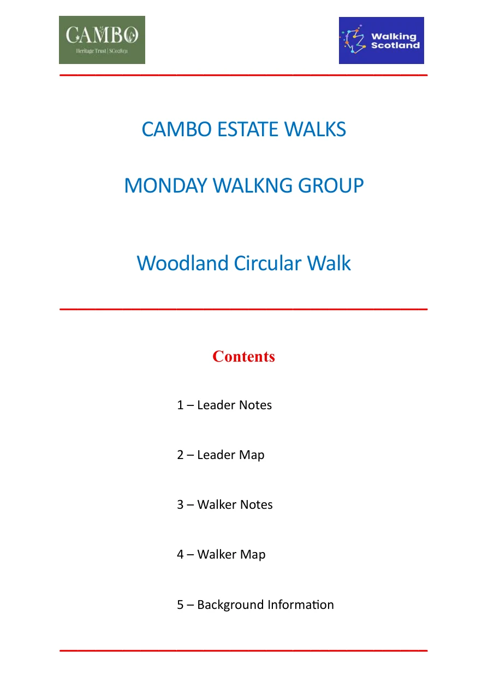
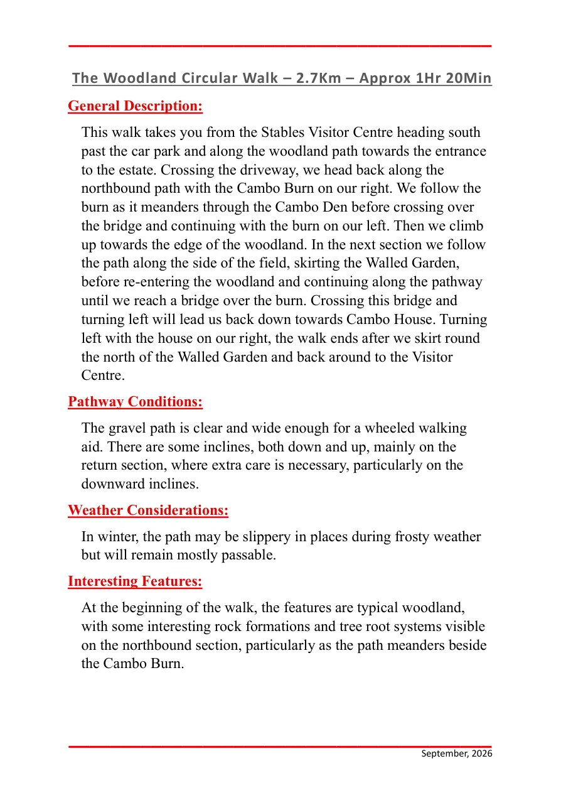
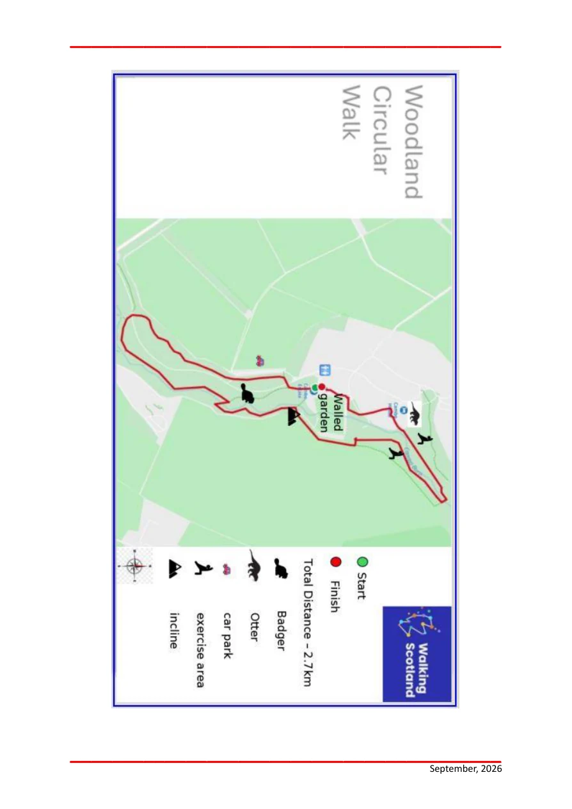
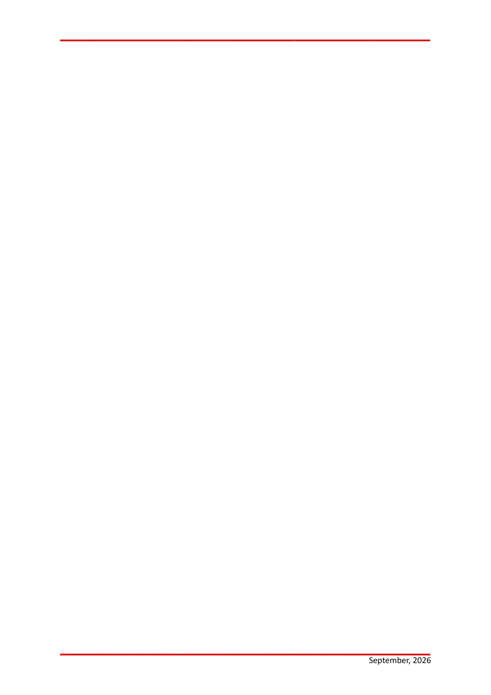

1 / 7
Open / Print PDF
2 / 7
Open / Print PDF
3 / 7
Open / Print PDF
4 / 7
Open / Print PDF
5 / 7
Open / Print PDF
6 / 7
Open / Print PDF
7 / 7
Open / Print PDF
The reader is entirely HTML and CSS. JavaScript is not required.